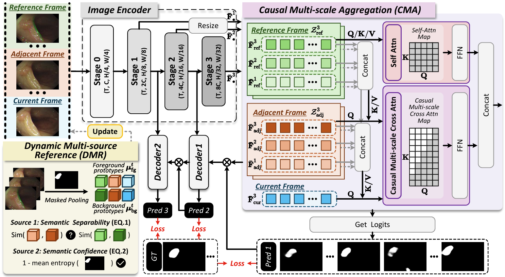
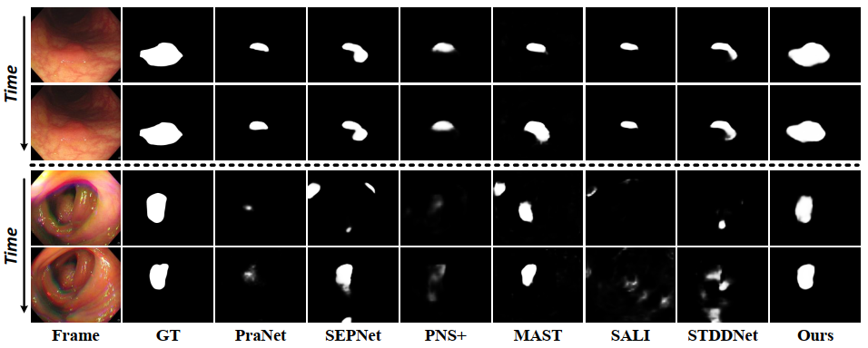

CMSA-Net (MICCAI 2026)
Causal Multi-scale Aggregation with Adaptive Multi-source Reference for Video Polyp Segmentation
1Southeast University 2Mohamed bin Zayed University of Artificial Intelligence

CMSA-Net addresses weak semantic discrimination, motion blur, and scale variation through causal temporal modeling and adaptive reference selection.
- CMACausal multi-scale aggregation gathers historical evidence while preserving temporal order.
- DMRDynamic multi-source reference selection chooses reliable semantic and local references.
- VPSStable video polyp segmentation under appearance, motion, and scale changes.
Presentation
English and Chinese video explanations
Conference-style walkthroughs of the motivation, architecture, experiments, and key conclusions.
Visual results
Cleaner masks across hard video frames.
Qualitative comparisons show that CMSA-Net maintains more complete polyp masks than baseline predictions under ambiguity, blur, and appearance variation.

Poster
MICCAI 2026 Poster
Slides
Presentation Slides
Citation
Cite CMSA-Net
@article{wang2026cmsanet,
title={CMSA-Net: Causal Multi-scale Aggregation with Adaptive Multi-source Reference for Video Polyp Segmentation},
author={Tong Wang and Yaolei Qi and Siwen Wang and Imran Razzak and Guanyu Yang and Yutong Xie},
journal={arXiv preprint arXiv:2602.22821},
year={2026}
}